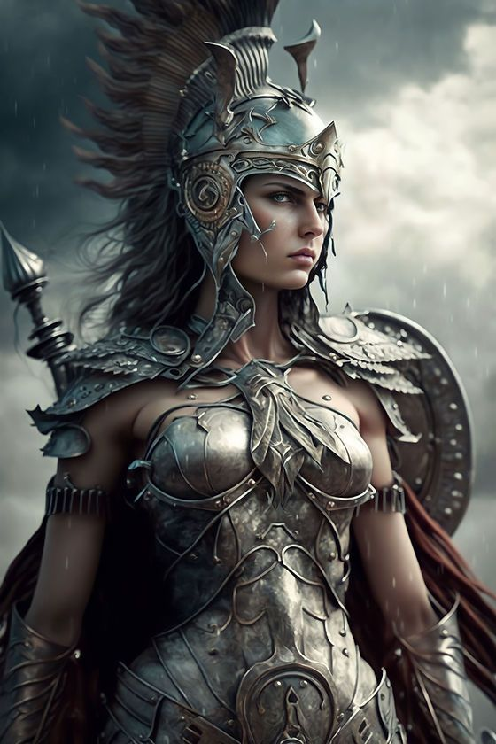
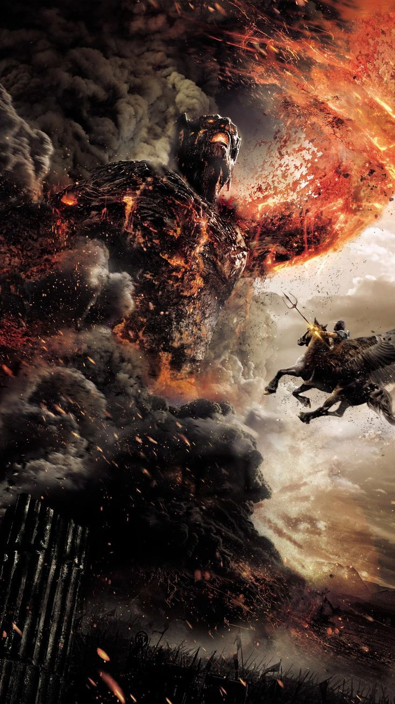

In the rich tapestry of Greek mythology,the gods and goddess of Mount Olympus reign supreme,
wielding immense power and influence over the cosmos.Yet,even these divine beings are not immune to pitfalls of
mortal exsistence.Beyond their majestic thrones and divine splendor lies a world fraught with conflicts,hubris and
ultimately downfall.Join me on a journey through the annals of Greek mythology as i explore into the lives and fate
of Zeus,Cronus,Hades,Poseidon,Ares,Athena,Medusa and other gods for even themselves are not immune to the inexorable
march of fate,and their downfall serves as poignant reminder of the fragility of power and inevitaility of consequence.
Zeus,faced numerous challenges throughout his reign,including threats to his power and authority.
Due to the prophecy that his father feard that one of his offspring will overthrow him,which lead him
to swallow each of his children,Zeus was saved by his mother Rhea and Zeus eventually overthrew Cronus.
Hades, the god of the underworld, does not experience a downfall in the traditional sense.
He faces challenges related to his realm and conflicts with other gods, such as his abduction of Persephone, which leads to conflict with her mother, Demeter.
Despite these challenges, Hades remains a powerful and influential deity, ruling over the realm of the dead.

Athena, the goddess of wisdom and warfare, does not experience a traditional downfall in Greek mythology.
However, she faces challenges and conflicts, such as her rivalry with Poseidon for patronage over Athens.
Despite these challenges, Athena remains a powerful and revered deity, known for her strategic prowess and wisdom.
Poseidon, the god of the sea, does not face a traditional downfall in Greek mythology.
He experiences conflicts and rivalries with other gods, such as his competition with Athena for patronage over Athens.
Despite these conflicts, Poseidon remains a powerful deity, known for his control over the seas and his influence in various myths and legends.
Medusa was a mortal woman who faced a tragic downfall due to circumstances beyond her control.
According to myth, Medusa was once a beautiful priestess in Athena's temple. However, she incurred the wrath of Athena when she was violated by Poseidon in Athena's temple.
In her anger, Athena cursed Medusa, transforming her into a hideous creature with snakes for hair and a gaze that turned anyone who looked at her into stone.
Medusa's downfall was sealed when she was slain by the hero Perseus, who used a mirrored shield to avoid her gaze and behead her.
Ares, the god of war, does not experience a traditional downfall in Greek mythology.
However, he faces defeats and setbacks in battles with both mortals and other gods due to his impulsive and reckless nature.
Despite these setbacks, Ares remains a formidable deity, associated with the brutal and chaotic aspects of warfare.

Cronus, the Titan ruler and father of Zeus, faced his downfall due to his own fear and paranoia.
Upon learning of the prophecy that one of his children would overthrow him, Cronus swallowed each of his offspring. However, this act of devouring his children eventually led to his downfall.
Zeus, saved by his mother Rhea, grew up to challenge and defeat Cronus, leading to the Titanomachy, a great war between the Titans and the Olympian gods. Zeus emerged victorious, overthrowing Cronus and banishing him to the depths of Tartarus.
As we bid farewell to the gods of Olympus, let us carry with us the timeless lessons learned from their downfall. Let us strive for humility in the face of power, wisdom in the midst of conflict, and compassion in the shadow of divine wrath.
For in the end, it is not the strength of our arms or the depth of our ambition that defines us, but the courage to face our own flaws and the resilience to rise again, even in the face of our own downfall.